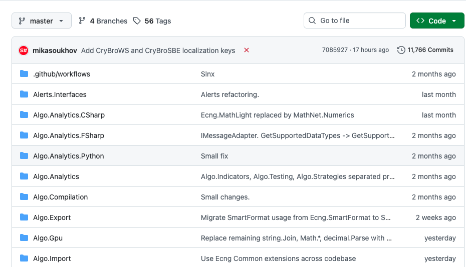
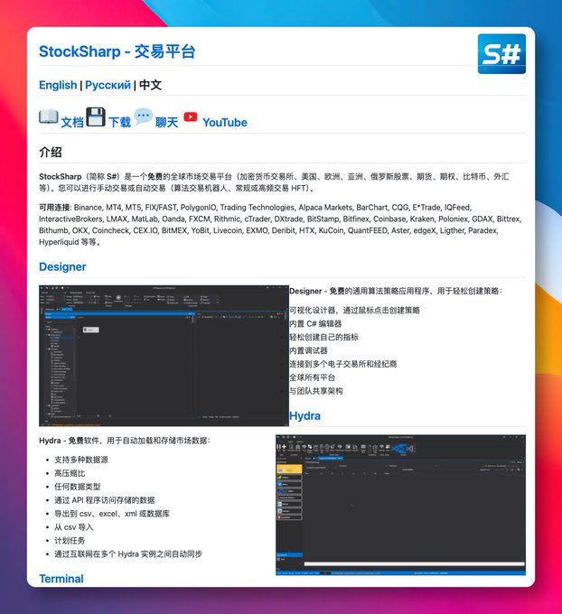
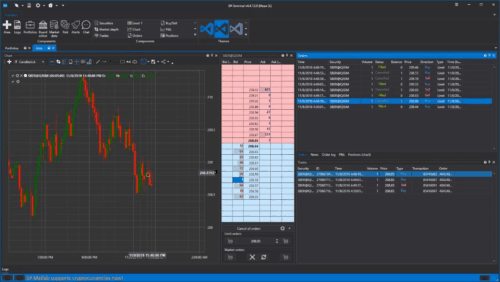

想做量化的人，很多都是这么卡住的。
脑子里已经有策略了，甚至回测思路都想好了，结果第一步不是研究信号，不是优化风控，而是先去对接交易所接口。这个交易所一套 API，那个券商又是一套协议，鉴权、订阅、行情、下单、重连、异常处理，光把“连上”这件事做好，精力就先被榨掉一大半。
很多人不是不会写策略，是还没写到策略，就已经被连接层劝退了。

最近在 GitHub 上翻到一个开源项目，叫 StockSharp。它本身不是那种只给你一个 SDK 然后就让你自己慢慢拼的东西，而是直接做成了一整套量化交易平台：底层有 API，往上有策略设计器、数据下载工具、图表终端，甚至连策略测试这一套也都带着。仓库首页写得很直接，它覆盖股票、期货、期权、外汇、加密货币等市场，还列了不少现成连接器，包括 Binance、Interactive Brokers、Alpaca、Oanda、Kraken、OKX 等。对想少踩一点“接线坑”的人来说，这种东西看着就挺顺眼。
我觉得它最有意思的点，不是“功能很多”，而是它把量化里最容易把人拖死的脏活，尽量包圆了。
你如果愿意写代码，可以直接用它的 C# API 去搭策略，仓库里甚至给了连接、订阅 K 线、接收行情、发单的示例；你如果不想一上来就埋进代码里，它还有可视化的 Designer，支持拖拽式搭策略逻辑，也内置 C# 编辑器和调试能力。这个路子其实挺现实的：先跑通，再精修，不一定非得从第一天就把自己逼成底层框架工程师。

另外一块我比较在意的是数据。
很多所谓“量化工具”嘴上说得很全，最后数据还是你自己到处扒。StockSharp 里有个 Hydra，官方给的定位就是自动下载和存储市场数据，支持多数据源，也支持导出到 csv、excel、xml 或数据库。还有单独的图表终端，能看不同类型 K 线、Volume Profile、Cluster Chart 这些。你会发现，它想做的不是一个单点工具，而是把“数据获取—策略构建—回测验证—图表观察—实盘执行”尽量串成一条线。
这件事为什么重要？
因为很多人手动交易转量化，真正缺的不是“策略灵感”，而是一个完整工作流。你总不能白天在 Excel 里看数据，晚上拿 Python 测两把，最后再切到另一个终端手动下单。流程一断，很多判断就变形了。平台未必保证你赚钱，但至少能让你别把时间浪费在重复搬砖上。

当然了，这种平台也不是装上就起飞。量化最难的东西，依旧不是界面，也不是连接器，而是策略本身有没有 edge，风控是不是靠谱，参数是不是过拟合。平台只能帮你把路铺平，不能替你做判断。
但实话说，能把“接口对接”这件烦事先卸下来，已经很值钱了。
对于想把交易从手动盯盘升级成系统化执行的人，StockSharp 这类项目确实值得看一眼。至少它不是只给你一个零件包，而是给你一整套能动起来的东西。仓库目前在 GitHub 上已有 9k+ stars，采用 Apache-2.0 许可，开源程度也比较彻底。
GitHub地址：StockSharp / StockSharp